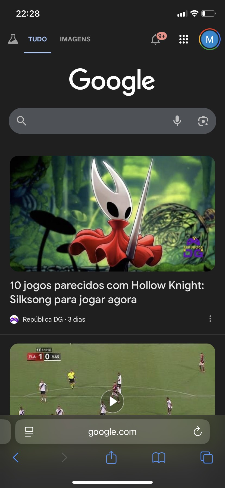

O que é o Google?
O Google é um site de buscas que ajuda a encontrar informações, imagens, notícias e muito mais na internet.
1. Acessar o Google
Abra o navegador (Chrome, Safari, etc.) e digite www.google.com.
2. Digitar uma busca
Escreva em poucas palavras, por exemplo: “receita bolo de fubá”.
💡 Quanto mais simples a frase, melhores os resultados.
3. Escolher resultados
Clique em sites conhecidos (jornais, grandes portais).
⚠️ Evite links com prêmios ou downloads estranhos.
4. Usar filtros
No topo, escolha entre Imagens, Notícias, Vídeos, etc.
5. Favoritar páginas
No navegador, clique na estrela para salvar sites importantes.